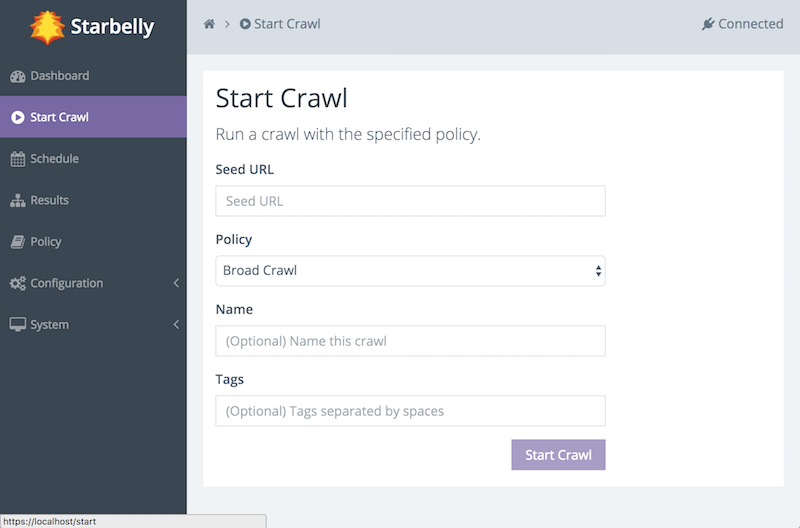
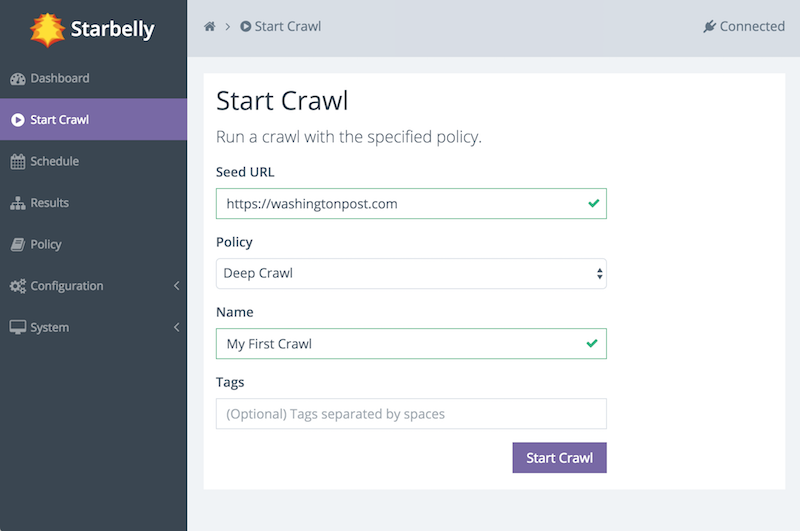
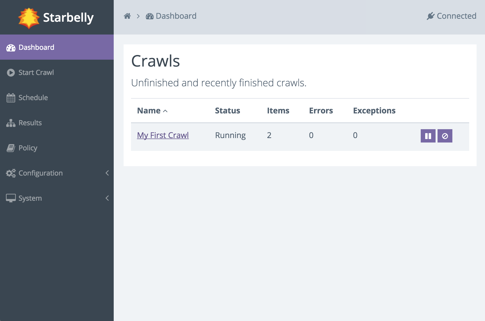
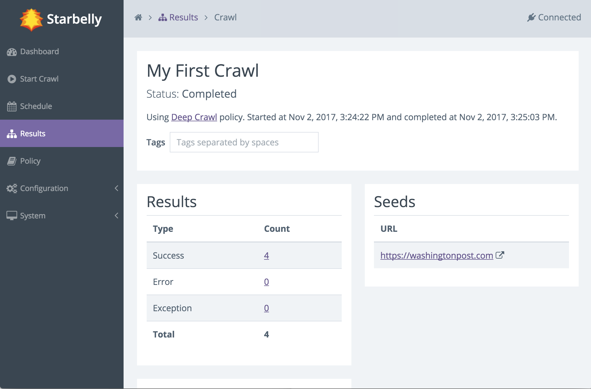

Your First Crawl¶
Starbelly offers a lot of ways to fine tune crawling, but for your first crawl, we will just use all of its default settings. The goal of this section is to perform a deep crawl of a news site. Here are a few example sites you may want to try:
Begin by accessing the Starbelly GUI in your web browser. You should be able to see the dashboard:

The dashboard is currently empty because you have not started any crawls yet, but let us take a moment to get familiar with the interface. On the left side, under the “Starbelly” logo, is the menu. Click any item in the menu to view it. There is a gray bar across the top of the screen. The left side of this bar displays breadcrumbs, e.g. the home icon and the dashboard icon. The breadcrumbs help you keep track of where you are, and also allow you to quickly return to earlier screens. The right side of the bar shows the status “Connected”, meaning that it is connected to the Starbelly server.
Next, click on Start Crawl in the menu.
This screen allows you to start a crawl. First, enter a seed URL. Second, select the Deep Crawl policy (more on that in a moment). Optionally, you may assign a name to the crawl. If you do not assign a name, then the crawler will choose a name for you. Finally, you may assign tags. Tags may be used by consumers of crawl data, but they do not have any effect on the crawl itself, so leave it blank for now. (You can edit the tags later if you wish.)
When you are ready, click the Start Crawl button. You should see a notification that the crawl is starting. Go back to the Dashboard and you should now be able to see that your crawl is running. The dashboard updates in realtime as the crawler downloads documents.
You can click on the name of the crawl to view details about that crawl job. The details screen also updates in real time.
The crawl will continue to run, downloading various documents that it finds, until it reaches its end. But how does it decide what documents to download, and how does it decide when the crawl should end? These questions are answered by consulting the crawl policy, which guides the crawler’s decision making. In this example, we used the default Deep Crawl policy, which stays inside the same domain as the seed URL and crawls to depth 10. You may customize this policy or create any number of your own policies to carefully refine crawler behavior.
Where does the crawl data go and what can you do with it? You can view crawl results inside Starbelly, but this feature is intended to help with debugging, not as a practical way to use crawl data. Crawl data is stored inside Starbelly’s database until you explicitly delete it (see the Crawl Results screen). Starbelly is just a crawling frontend, which means that it is designed to be plugged into another application that can read the crawl data and do something useful with it, such as a search engine or a scraping program.
Now that you have a crawl under your belt, you might want to do a deeper dive into Configuration Guide and Policy.